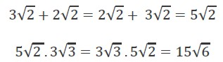
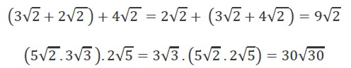
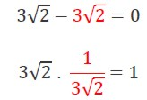
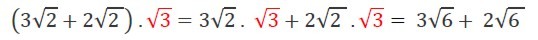

Propiedades de los números irracionales
Propiedades de los números irracionales
Propiedad conmutativa: en la suma y la multiplicación se cumple la propiedad conmutativa, según la cual el orden de los factores no altera el resultado. Por ejemplo:

Propiedad asociativa: donde la distribución y agrupación de los números da como resultado el mismo número, independientemente de su agrupación, tanto para la suma como para la multiplicación.

Elemento opuesto: existe un inverso aditivo para la suma de números irracionales; es decir que cada número tiene su negativo que lo anula, de la misma forma, un inverso multiplicativo.

La multiplicación es distributiva en relación con la suma y la resta.
Ejemplo:

Para tener en cuenta:
El conjunto de los números irracionales no verifica clausura entre las operaciones; es decir, la suma y el producto entre dos irracionales no necesariamente es irracional.
Obra publicada con Licencia Creative Commons Reconocimiento Compartir igual 4.0